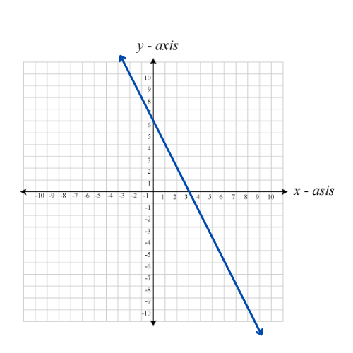

It is a line whose expression or formula is given by; y = f(x) = px + q or f(x)=mx+b. It has one independent and one dependent variable. The independent variable is x and the dependent one is y. P is the constant term or the y-intercept and is also the value of the dependent variable.
Here are some examples
| function | graph |
|---|---|
| f(x)=3x+6 |  |
| f(x)=-2x+6 |  |